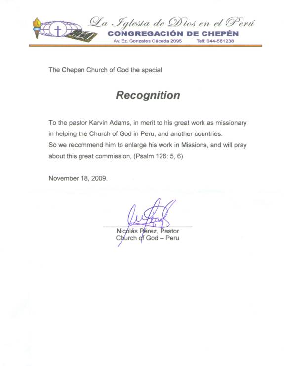

Testimonials
from those who have served with Karvin & Sandy
“It was a joy to participate with Partners In Missions in our recent trip to Quito, Ecuador. We were able to witness the love and admiration that the Christians in Ecuador have for Pastor Karvin Adams. His missionary work is a wonderful blessing to many Christians in Latin America. Partners in Missions has contributed much to the ministry of Indigenous Peoples in our world. To be part of the training and evangelism work of this missions organization has brought great fulfillment to my life. PiM is making a difference in the lives of many individuals. It is a focused ministry that has acquired results in difficult parts of the world. In some trips with Karvin and others we connected with radio stations where we air "Hermandad Cristiana", our Spanish CBH international radio program. What a joy to see that we can accomplish more together and realize that we do not compete but rather compliment each other in ministry. Our heart felt gratitude is extended to Karvin and Sandy Adams for the significant ministry in missions,
Rev. Gilbert Davila
Spanish Speaker for CBH (Christians Broadcasting Hope)
Austin, Texas
<><><><><><><>
"Greetings. I would like to
add my recommendation to those already received with regard to Karvin Adams and
Partners in Missions, an organization he and his wife Sandy founded and direct
to support the work of missionaries and national leaders of the Church of God in
Latin America.
In September 2005, when we were new as Regional Coordinators for Latin America, Karvin invited my wife Barbara and I to accompany him on a short-term mission trip to the San Blas Islands of Panama, where Partners in Missions has been working for several years with native Americans of the Kuna Yala culture. Karvin’s ministry to the Kuna—as well as in other areas of the region where Partners operates—involves congregational development and leader training to serve, not only Church of God congregations on the islands, but an interdenominational community of evangelical churches, as well.
We find Karvin and Sandy to be committed to long-term service to the growing church in Latin America. They are sensitive students of local culture and appreciate the complexities of working cross-culturally in the region. Karvin regularly consults us on plans or programs that intersect with our work as Regional Coordinators. This is not just a courtesy. He believes, as do we, that open and candid communication between Partners in Missions and Global Missions is essential to the success of our corporate efforts to fulfill the Great Commission in this key area of the world."
David L. Miller, Former Regional Coordinator for Latin America
Global Missions of the Church of God
<><><><><><><>
Recommendation
from
Pastor
Delia Rodriguez
(the
first Church of God convert in Ecuador)
"To be an example it does not matter the age, young or old, foreigner or national, white, black or blond; and that is what I received from Pastor Karvin Adams and his wife for my daily life and ministry that began in Quito, in the Santa Clara congregation. First, I thank the Lord Jesus who fortifies me, "I thank Christ Jesus our Lord, who has given me strength, that he considered me faithful, appointing me to his service" (1Timothy 1:12) and second I thank my brother Karvin and Sandy Adams for their great example in the ministry that God gave me.
They
were missionaries in Ecuador in the year 1994 and from them I received a
marvelous example of irreproachable conduct, of work, of love, of faith and
purity. And I remember their love,
they were not concerned about the dust or the hot sun; they were here to help
and to share with all the brothers.
After
their departure to the U.S., we continue to receive their support through
multiple work camps that continuously visited as they worked in our
congregations. Work camps with
which we had the happiness to work, to share, to pray, to enjoy the economic and
spiritual blessings that came through the ministry of Bro. Karvin.
If
I begin to enumerate all the work that they did and continue to write, this is
why: I Pastor Delia Rodriguez testify before God and all the Churches of God in
the world that the work of Bro. Karvin and Sandy as missionaries has been
excellent and of great blessing and the Chief Shepherd will pay him, "When
the Chief Shepherd appears, you will receive the crown of glory that will never
fade” (1Peter5:4)."
Delia
<><><><><><>
Recommendation
from Pastor Katia Salgado
Tonsupa,
Ecuador
"It
is a pleasure, first as a child of God, second as pastor of the Congregation of
Tonsupa - Ecuador to express the importance of the ministry of pastor and
missionary Karvin Adams and his wife Sandy.
In the beginning of my Christian life the spiritual support, and above all his counsel and example gave me the drive for ministry, for when I was very young, Missionary Karvin Adams saw something in me that I did not see. He was always encouraging me, orienting me toward spiritual growth, toward the service to the Lord. He and his wife Sandy have been more than pastors, they have been friends, a friendship that has lasted all these years and above all in the most difficult moments. In spite of the distance I have been able to feel their love, their support, their prayers, their unconditional aid.
In
my ministry as a pastor:
I
lack words to express the great blessing that has been for me and the
congregations of Ecuador through the ministry of Pastor Karvin throughout these
fifteen years, ministry that we are praying for.
Therefore it has been of great blessing for my life and the life of many
people. Their work camps and visits
have encouraged us, have permitted us to work and they have fortified us
spiritually and materially.
1
Corinthians 3:13 says "his work will be shown for what it is, because the
Day will bring it to light. It will
be revealed with fire, and the fire will test the quality of each man’s
work". The work of Pastor
Karvin has carried on through these years for all to see, and has produced a lot
of fruit; many have been and continue to be blessed through his life and
ministry."
Katia
<><><><><><>
Recommendation
from
Pastor
Paola Rodriguez
Co-Pastor
– Santa Clara, Ecuador
"Through
this, I am pleased to certify that Pastor Karvin Adams whom I have had the
blessing to know, who with his wife Sandy in the year 1994 accepted the
challenge to be the first missionaries of the Church of God in Ecuador complying
with the plan of God.
By consecrating their lives they left impressions, since, as church leaders were able to influence with their living testimony of respect, of humility and patience. They ministered to us with fidelity, maintained the unity decreed by God and we were affirmed in our beloved one the Lord Jesus.
In
the year 1995 they placed the foundation stone of the Santa Clara Congregation
of Quito that was just born; today we have a beautiful finished sanctuary,
because the work of these beloved missionaries Adams never ceased.
Upon extending this Certification - Recommendation I do it with gratitude to God and to these servants because I am fruit of their work as many more will be able to testify.
With
my prayer I ask God and the Churches of God in the world that this beautiful
desire of the Adams family to serve as missionaries be satisfied. "A
generous man will prosper; he who refreshes others will himself be
refreshed" (Proverbs 11:25)."
Paola
<><><><><><>
